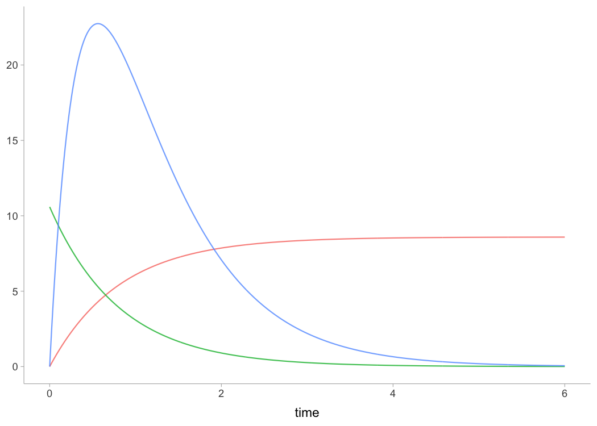
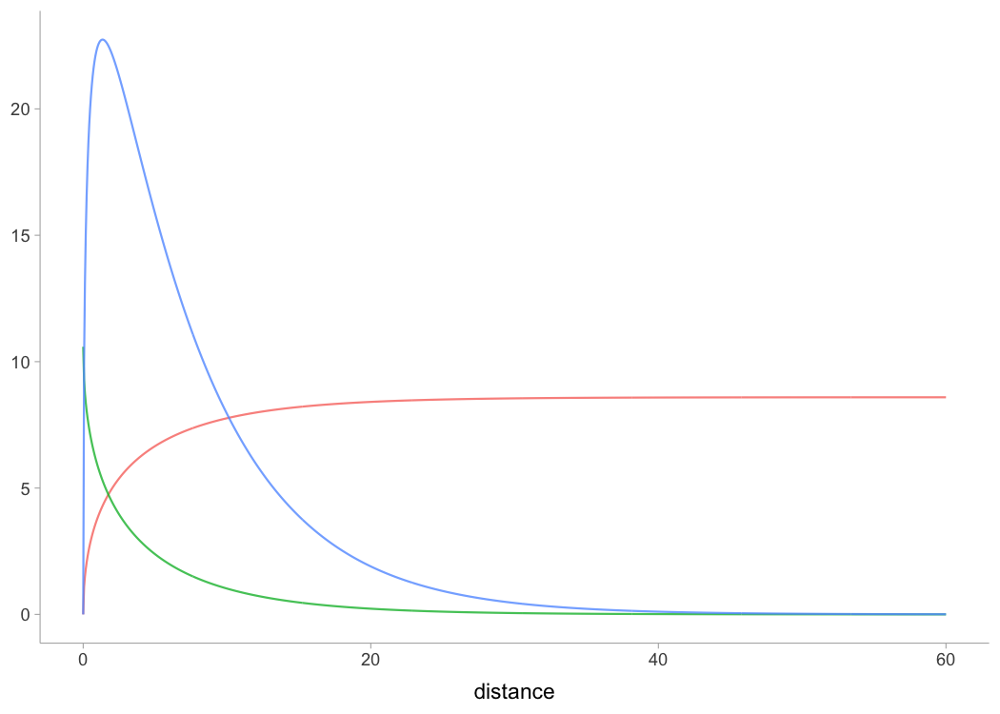
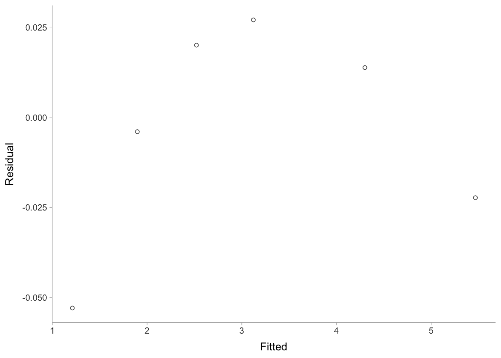
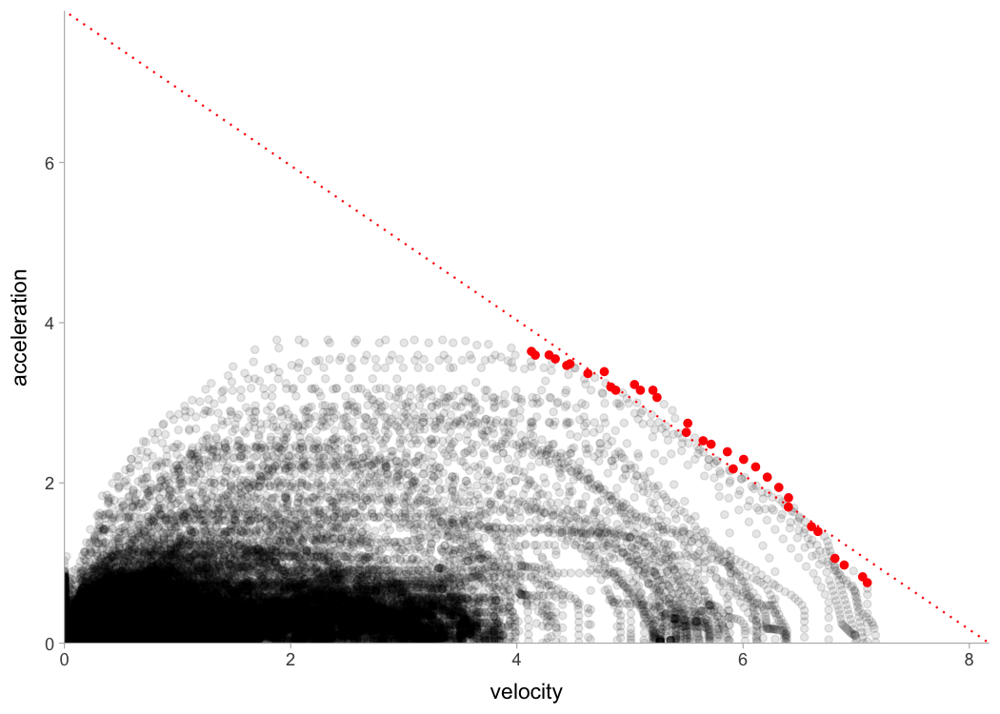
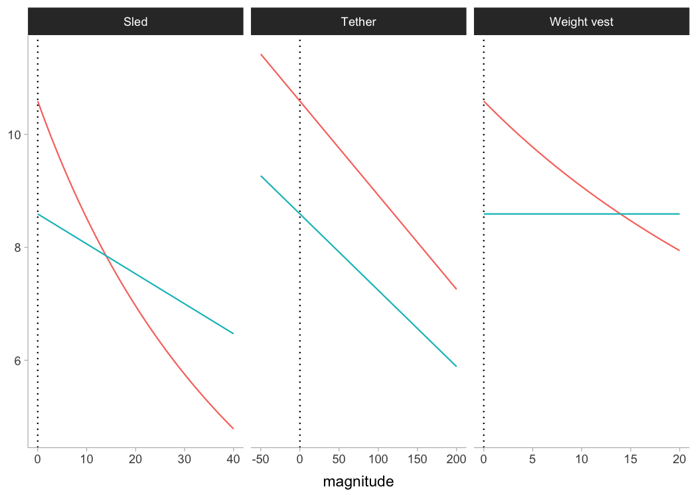
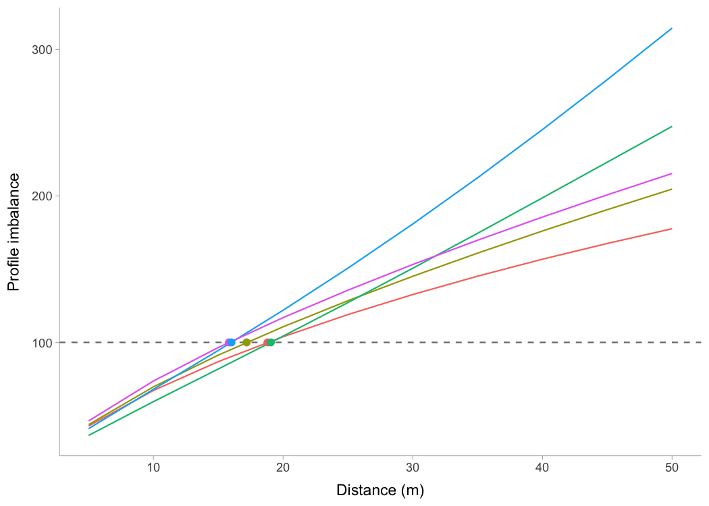

{shorts} is an R package aimed for the analysis of the un-resisted and resisted short sprints (<6sec; without deceleration), creation of acceleration-velocity profiles (AVP), force-velocity profiles (FVP), and optimization profiles using variety of sprint traces (e.g., time-velocity from laser/radar gun, distance-time from timing gates/photocells). It represents a simple to use tool for researcher and practitioners interested in modeling short sprints performance.
Installation
# Install from CRAN
install.packages("shorts")
# Or the development version from GitHub
# install.packages("remotes")
remotes::install_github("mladenjovanovic/shorts")Examples
{shorts} comes with multiple sample data sets. Let’s load split_times and radar_gun_data with N=5 athletes:
Profiling using split times
{shorts} package utilizes modified mono-exponential functions to model short sprint performance. To model sprint performance using split times, distance will be used as predictor and time as target. Since split_times dataset contains data for multiple athletes, let’s extract only one athlete and model it using shorts::model_timing_gates() function.
| athlete | bodyweight | distance | time |
|---|---|---|---|
| Kimberley | 55 | 5 | 1.16 |
| Kimberley | 55 | 10 | 1.89 |
| Kimberley | 55 | 15 | 2.54 |
| Kimberley | 55 | 20 | 3.15 |
| Kimberley | 55 | 30 | 4.31 |
| Kimberley | 55 | 40 | 5.44 |
Parameters estimated using mono-exponential equation are maximal sprinting speed (MSS), and maximal acceleration (MAC). Additional parameters computed from MSS and MAC are relative acceleration (TAU) and maximal relative power (PMAX) (which is calculated as MAC ⋅ MSS ÷ 4).
kimberley_profile <- shorts::model_timing_gates(
distance = kimberley_data$distance,
time = kimberley_data$time
)
kimberley_profile
#> Estimated model parameters
#> --------------------------
#> MSS MAC TAU PMAX
#> 8.591 10.589 0.811 22.743
#>
#> Model fit estimators
#> --------------------
#> R2 meanErr meanErr_perc minErr
#> 0.99966 -0.00309 -0.53860 -0.05293
#> minErr_perc maxErr maxErr_perc maxAbsErr
#> -4.57121 0.02699 0.85715 0.05293
#> maxAbsErr_perc RMSE RMSE_perc MAE
#> 4.57121 0.02779 1.93922 0.02333
#> MAE_perc
#> 1.19263
summary(kimberley_profile)
#>
#> Formula: time ~ predict_time_at_distance(distance, MSS, MAC)
#>
#> Parameters:
#> Estimate Std. Error t value Pr(>|t|)
#> MSS 8.591 0.123 70.1 0.00000025 ***
#> MAC 10.589 0.460 23.0 0.00002108 ***
#> ---
#> Signif. codes: 0 '***' 0.001 '**' 0.01 '*' 0.05 '.' 0.1 ' ' 1
#>
#> Residual standard error: 0.034 on 4 degrees of freedom
#>
#> Number of iterations to convergence: 5
#> Achieved convergence tolerance: 0.0000000149
coef(kimberley_profile)
#> MSS MAC
#> 8.59 10.59
confint(kimberley_profile, level = 0.95)
#> 2.5% 97.5%
#> MSS 8.27 8.96
#> MAC 9.42 12.02To return the predicted/fitted values (in this case time variable), use predict() function:
predict(kimberley_profile)
#> [1] 1.21 1.90 2.52 3.12 4.30 5.47To create a simple plot use S3 plot() method. There are four type options: "model" (default), "kinematics-time", "kinematics-distance", or "residuals":
plot(kimberley_profile)
plot(kimberley_profile, "kinematics-time")
plot(kimberley_profile, "kinematics-distance")
plot(kimberley_profile, "residuals")
If you are interested in calculating average split velocity, use shorts::format_splits()
kable(shorts::format_splits(
distance = kimberley_data$distance,
time = kimberley_data$time
))| split | split_distance_start | split_distance_stop | split_distance | split_time_start | split_time_stop | split_time | split_mean_velocity | split_mean_acceleration |
|---|---|---|---|---|---|---|---|---|
| 1 | 0 | 5 | 5 | 0.00 | 1.16 | 1.158 | 4.32 | 3.729 |
| 2 | 5 | 10 | 5 | 1.16 | 1.89 | 0.735 | 6.80 | 3.381 |
| 3 | 10 | 15 | 5 | 1.89 | 2.54 | 0.648 | 7.72 | 1.409 |
| 4 | 15 | 20 | 5 | 2.54 | 3.15 | 0.608 | 8.22 | 0.835 |
| 5 | 20 | 30 | 10 | 3.15 | 4.31 | 1.164 | 8.59 | 0.316 |
| 6 | 30 | 40 | 10 | 4.31 | 5.44 | 1.131 | 8.84 | 0.222 |
To plot predicted velocity, acceleration, air resistance, force, and power over distance, use shorts:predict_XXX(). Please note that to calculate force, air resistance, and power, we need Kimberley’s bodymass and height (as well as other characteristics such as air pressure, temperature and wind - see get_air_resistance() function).
kimberley_bodymass <- 60 # in kilograms
kimberley_bodyheight <- 1.7 # in meters
kimberley_pred <- tibble(
distance = seq(0, 40, length.out = 1000),
# Velocity
pred_velocity = shorts::predict_velocity_at_distance(
distance,
kimberley_profile$parameters$MSS,
kimberley_profile$parameters$TAU
),
# Acceleration
pred_acceleration = shorts::predict_acceleration_at_distance(
distance,
kimberley_profile$parameters$MSS,
kimberley_profile$parameters$TAU
),
# Air resistance
pred_air_resistance = shorts::predict_air_resistance_at_distance(
distance,
kimberley_profile$parameters$MSS,
kimberley_profile$parameters$TAU,
bodymass = kimberley_bodymass,
bodyheight = kimberley_bodyheight
),
# Force
pred_force = shorts::predict_force_at_distance(
distance,
kimberley_profile$parameters$MSS,
kimberley_profile$parameters$TAU,
bodymass = kimberley_bodymass,
bodyheight = kimberley_bodyheight
),
# Power
pred_power = shorts::predict_power_at_distance(
distance,
kimberley_profile$parameters$MSS,
kimberley_profile$parameters$TAU,
bodymass = kimberley_bodymass,
bodyheight = kimberley_bodyheight
),
)
# Convert to long
kimberley_pred <- gather(kimberley_pred, "metric", "value", -distance)
ggplot(kimberley_pred, aes(x = distance, y = value)) +
geom_line() +
facet_wrap(~metric, scales = "free_y") +
xlab("Distance (m)") +
ylab(NULL)To do prediction simpler, use shorts::predict_kinematics() function. This will provide kinetics and kinematics for 0-6 s sprint using 100 Hz.
predicted_kinematics <- predict_kinematics(
kimberley_profile,
bodymass = kimberley_bodymass,
bodyheight = kimberley_bodyheight
)
kable(head(predicted_kinematics))| time | distance | velocity | acceleration | bodymass | inertia | resistance | air_resistance | horizontal_force | horizontal_force_relative | vertical_force | resultant_force | resultant_force_relative | power | power_relative | work | average_power | average_power_relative | RF | force_angle |
|---|---|---|---|---|---|---|---|---|---|---|---|---|---|---|---|---|---|---|---|
| 0.00 | 0.000 | 0.000 | 10.59 | 60 | 0 | 0 | 0.000 | 635 | 10.59 | 589 | 866 | 14.4 | 0 | 0.00 | 0.000 | 0.734 | 42.8 | ||
| 0.01 | 0.001 | 0.105 | 10.46 | 60 | 0 | 0 | 0.003 | 628 | 10.46 | 589 | 860 | 14.3 | 66 | 1.10 | 0.332 | 33.2 | 0.554 | 0.729 | 43.2 |
| 0.02 | 0.002 | 0.209 | 10.33 | 60 | 0 | 0 | 0.011 | 620 | 10.33 | 589 | 855 | 14.2 | 130 | 2.16 | 1.313 | 65.6 | 1.094 | 0.725 | 43.5 |
| 0.03 | 0.005 | 0.312 | 10.21 | 60 | 0 | 0 | 0.023 | 612 | 10.21 | 589 | 849 | 14.2 | 191 | 3.18 | 2.918 | 97.3 | 1.621 | 0.721 | 43.9 |
| 0.04 | 0.008 | 0.413 | 10.08 | 60 | 0 | 0 | 0.041 | 605 | 10.08 | 589 | 844 | 14.1 | 250 | 4.17 | 5.124 | 128.1 | 2.135 | 0.717 | 44.2 |
| 0.05 | 0.013 | 0.513 | 9.96 | 60 | 0 | 0 | 0.063 | 597 | 9.96 | 589 | 839 | 14.0 | 307 | 5.11 | 7.910 | 158.2 | 2.637 | 0.712 | 44.6 |
To get model residuals, use residuals() function:
residuals(kimberley_profile)
#> [1] -0.05293 -0.00402 0.01997 0.02699 0.01376 -0.02232Package {shorts} comes with find_XXX() family of functions that allow finding peak power and it’s location, as well as critical distance over which velocity, acceleration, or power drops below certain threshold:
# Peak power and location
shorts::find_peak_power_distance(
MSS = kimberley_profile$parameters$MSS,
MAC = kimberley_profile$parameters$MAC,
bodymass = kimberley_bodymass,
bodyheight = kimberley_bodyheight
)
#> $peak_power
#> [1] 1384
#>
#> $distance
#> [1] 1.42
# Distance over which power is over 80%
shorts::find_power_critical_distance(
MSS = kimberley_profile$parameters$MSS,
MAC = kimberley_profile$parameters$MAC,
bodymass = kimberley_bodymass,
bodyheight = kimberley_bodyheight,
percent = 0.8
)
#> $lower
#> [1] 0.342
#>
#> $upper
#> [1] 4.27
# Distance over which acceleration is under 50%
shorts::find_acceleration_critical_distance(
MSS = kimberley_profile$parameters$MSS,
MAC = kimberley_profile$parameters$MAC,
percent = 0.5
)
#> [1] 1.35
# Distance over which velocity is over 95%
shorts::find_velocity_critical_distance(
MSS = kimberley_profile$parameters$MSS,
MAC = kimberley_profile$parameters$MAC,
percent = 0.95
)
#> [1] 14.3Profiling using radar gun data
The radar gun data is modeled using measured velocity as target variable and time as predictor. Individual analysis is performed using shorts::model_radar_gun() function or shorts::model_laser_gun() (they are aliases). Let’s do analysis for Jim:
jim_data <- filter(radar_gun_data, athlete == "Jim")
jim_profile <- shorts::model_radar_gun(
time = jim_data$time,
velocity = jim_data$velocity
)
jim_profile
#> Estimated model parameters
#> --------------------------
#> MSS MAC TAU PMAX
#> 7.998 8.999 0.889 17.993
#>
#> Estimated model corrections
#> --------------------------
#> TC
#> -0.00011
#>
#> Model fit estimators
#> --------------------
#> R2 meanErr meanErr_perc minErr
#> 0.9992440860 -0.0000000248 -Inf -0.1640450506
#> minErr_perc maxErr maxErr_perc maxAbsErr
#> -Inf 0.1511233656 2.3325106593 0.1640450506
#> maxAbsErr_perc RMSE RMSE_perc MAE
#> Inf 0.0505025383 Inf 0.0392723633
#> MAE_perc
#> Inf
summary(jim_profile)
#>
#> Formula: velocity ~ predict_velocity_at_time(time - TC, MSS, MAC)
#>
#> Parameters:
#> Estimate Std. Error t value Pr(>|t|)
#> MSS 7.99801 0.00319 2504.55 <0.0000000000000002 ***
#> MAC 8.99871 0.01997 450.61 <0.0000000000000002 ***
#> TC -0.00011 0.00123 -0.09 0.93
#> ---
#> Signif. codes: 0 '***' 0.001 '**' 0.01 '*' 0.05 '.' 0.1 ' ' 1
#>
#> Residual standard error: 0.0506 on 597 degrees of freedom
#>
#> Number of iterations to convergence: 4
#> Achieved convergence tolerance: 0.0000000149
confint(jim_profile)
#> 2.5% 97.5%
#> MSS 7.99175 8.00429
#> MAC 8.95959 9.03797
#> TC -0.00253 0.00229
plot(jim_profile)In addition to MSS and MAC parameters, shorts::model_radar_gun() function also estimated time-correction (TC) parameter.
Rather than estimating MSS, shorts::model_radar_gun() function allows you to utilize peak velocity observed in the data as MSS. This is done by setting the use_observed_MSS parameter to TRUE:
jim_profile <- shorts::model_radar_gun(
time = jim_data$time,
velocity = jim_data$velocity,
use_observed_MSS = TRUE
)
jim_profile
#> Estimated model parameters
#> --------------------------
#> MSS MAC TAU PMAX
#> 8.095 8.678 0.933 17.563
#>
#> Estimated model corrections
#> --------------------------
#> TC
#> -0.0112
#>
#> Model fit estimators
#> --------------------
#> R2 meanErr meanErr_perc minErr
#> 0.9988 -0.0388 -Inf -0.2287
#> minErr_perc maxErr maxErr_perc maxAbsErr
#> -Inf 0.1825 2.8174 0.2287
#> maxAbsErr_perc RMSE RMSE_perc MAE
#> Inf 0.0798 Inf 0.0643
#> MAE_perc
#> Inf
summary(jim_profile)
#>
#> Formula: velocity ~ predict_velocity_at_time(time - TC, MSS, MAC)
#>
#> Parameters:
#> Estimate Std. Error t value Pr(>|t|)
#> MSS 8.09500 0.00521 1554.10 < 0.0000000000000002 ***
#> MAC 8.67822 0.03017 287.60 < 0.0000000000000002 ***
#> TC -0.01118 0.00203 -5.52 0.000000051 ***
#> ---
#> Signif. codes: 0 '***' 0.001 '**' 0.01 '*' 0.05 '.' 0.1 ' ' 1
#>
#> Residual standard error: 0.08 on 597 degrees of freedom
#>
#> Number of iterations to convergence: 5
#> Achieved convergence tolerance: 0.0000000149Profiling using tether devices
Some tether devices provide data out in a velocity-at-distance format. In this case, velocity is the outcome variable and distance is the predictor. To estimate sprint profiles from tether data, use shorts::model_tether() function.
# This creates sprint trace
tether_df <- shorts::create_sprint_trace(
MSS = 7, MAC = 6,
time = seq(0.01, 6, by = 0.01))
m1 <- model_tether(
distance = tether_df$distance,
velocity = tether_df$velocity)
m1
#> Estimated model parameters
#> --------------------------
#> MSS MAC TAU PMAX
#> 7.00 6.00 1.17 10.50
#>
#> Model fit estimators
#> --------------------
#> R2 meanErr
#> 0.999999999999999778 0.000000000000000464
#> meanErr_perc minErr
#> 0.000000000000849181 -0.000000000000038081
#> minErr_perc maxErr
#> -0.000000000032006657 0.000000000000298428
#> maxErr_perc maxAbsErr
#> 0.000000000499514588 0.000000000000298428
#> maxAbsErr_perc RMSE
#> 0.000000000499514588 0.000000000000012599
#> RMSE_perc MAE
#> 0.000000000020448893 0.000000000000001438
#> MAE_perc
#> 0.000000000000981334
plot(m1)Setting use_observed_MSS parameter to TRUE in the shorts::model_tether() function also allows you to use observed peak velocity as MSS.
In the case when distance is not centered at zero, use shorts::model_tether_DC() which also estimated the distance correction (DC) parameter, serving as model intercept (for more info see Using corrections section):
# This creates sprint trace
tether_df <- shorts::create_sprint_trace(
MSS = 7, MAC = 6,
time = seq(0.001, 6, by = 0.01),
# Add distance shift
DC = 5)
m1 <- model_tether_DC(
distance = tether_df$distance,
velocity = tether_df$velocity)
m1
#> Estimated model parameters
#> --------------------------
#> MSS MAC TAU PMAX
#> 7.00 6.00 1.17 10.50
#>
#> Estimated model corrections
#> --------------------------
#> DC
#> 5
#>
#> Model fit estimators
#> --------------------
#> R2 meanErr meanErr_perc
#> 1.0000000000000 0.0000000000648 0.0000008098034
#> minErr minErr_perc maxErr
#> -0.0000000000152 -0.0000000002897 0.0000000287380
#> maxErr_perc maxAbsErr maxAbsErr_perc
#> 0.0004791725496 0.0000000287380 0.0004791725496
#> RMSE RMSE_perc MAE
#> 0.0000000011812 0.0000195628726 0.0000000000741
#> MAE_perc
#> 0.0000008099718
plot(m1)Embedded (i.e., in-situ) Profiling
With the modern technologies like GPS and LPS, session acceleration and velocity can be tracked continuously. This provides an opportunity to estimate short sprint profiles from in-situ, without the need for explicit testing (assuming the maximal effort was performed). The analysis is based on the theoretical model where acceleration and velocity have linear relationship (i.e., mono-exponential model applied thus far). The time frame of the analysis can vary from single drills (e.g., sprint drills), session, week, to multiple weeks.
Here is an example of the data collected during one basketball session for a single person. Duration was approx. 90 min with 20 Hz sampling rate. This is the positional data:
data("LPS_session")
LPS_session %>%
ggplot(aes(x = x, y = y)) +
geom_point(alpha = 0.1)The next figure plots instant acceleration and velocity:
LPS_session %>%
ggplot(aes(x = velocity, y = acceleration)) +
geom_point(alpha = 0.1)To estimate embedded short sprint profile, we need to filter out positive acceleration and velocities over 3 ms−1 (default), then filter few top acceleration observations per velocity bracket (for more information please see Clavel et al. (2023)). Here is the graphical representation:
embedded_model <- model_in_situ(
LPS_session$velocity,
LPS_session$acceleration,
velocity_threshold = 4)
LPS_session %>%
filter(acceleration > 0) %>%
ggplot(aes(x = velocity, y = acceleration)) +
geom_point(alpha = 0.1) +
geom_point(
data = embedded_model$data,
color = "red"
) +
geom_abline(
intercept = embedded_model$parameters$MAC,
slope = -embedded_model$parameters$MAC / embedded_model$parameters$MSS,
linetype = "dotted", color = "red") +
scale_x_continuous(expand = c(0, 0), limits = c(0, embedded_model$parameters$MSS)) +
scale_y_continuous(expand = c(0, 0), limits = c(0, embedded_model$parameters$MAC))
Force-Velocity Profiling
To estimate Force-Velocity Profile (FVP) using approach by Samozino et al. (2016, 2022) use shorts::create_FVP():
kimberley_fv <- shorts::create_FVP(
MSS = kimberley_profile$parameters$MSS,
MAC = kimberley_profile$parameters$MAC,
# These are needed to estimate air resistance
bodymass = kimberley_bodymass,
bodyheight = kimberley_bodyheight
)
kimberley_fv
#> $bodymass
#> [1] 60
#>
#> $F0
#> [1] 635
#>
#> $F0_rel
#> [1] 10.6
#>
#> $V0
#> [1] 8.85
#>
#> $Pmax
#> [1] 1405
#>
#> $Pmax_rel
#> [1] 23.4
#>
#> $FV_slope
#> [1] -1.2To convert back to Acceleration-Velocity Profile (AVP), use:
kimberley_avp <- shorts::convert_FVP(
F0 = kimberley_fv$F0,
V0 = kimberley_fv$V0,
bodymass = kimberley_bodymass,
bodyheight = kimberley_bodyheight
)
kimberley_avp
#> $MSS
#> [1] 8.59
#>
#> $MAC
#> [1] 10.6Using external load
{shorts} package also allows utilizing external load in estimating FVP, as well as using FVP parameters to predict kinematic and kinetic variables. External load is represented either with additional inertia (i.e., weight vest), horizontal resistance (i.e., tether device that create additional resistance or help, or a hill sprinting), or both (i.e., a sled, which have both inertia and resistance due to friction forces). One might also consider head and tail wind as a form of resistance (or assistance).
Let’s see how theoretical model, assuming FVP is determinant of performance (which I do not agree with, BTW), predicts changes in sprint characteristics (i.e., MSS and MAC) under different external load conditions and magnitudes using Kimberley’s estimated FVP:
loads_df <- rbind(
tibble(type = "Weight vest", magnitude = seq(0, 20, length.out = 100), inertia = magnitude, resistance = 0),
tibble(type = "Tether", magnitude = seq(-50, 200, length.out = 100), inertia = 0, resistance = magnitude),
tibble(type = "Sled", magnitude = seq(0, 40, length.out = 100), inertia = magnitude, resistance = magnitude * 9.81 * 0.4)
) %>%
mutate(
data.frame(shorts::convert_FVP(
F0 = kimberley_fv$F0,
V0 = kimberley_fv$V0,
bodymass = kimberley_bodymass,
bodyheight = kimberley_bodyheight,
inertia = inertia,
resistance = resistance
))
)
loads_df %>%
pivot_longer(cols = c(MSS, MAC), names_to = "parameter") %>%
ggplot(aes(x = magnitude, y = value, color = parameter)) +
geom_vline(xintercept = 0, linetype = "dotted") +
geom_line() +
facet_wrap(~type, scales = "free_x") +
ylab(NULL)
Following figure depicts the effect on split times under different load types and magnitudes, assuming FVP to be determinant of performance (i.e., causal mechanism):
dist_df <- expand_grid(
loads_df,
distance = c(5, 10, 20, 30, 40)
) %>%
mutate(
time = predict_time_at_distance(distance, MSS, MAC),
distance = factor(
paste0(distance, "m"), levels = c("5m", "10m", "20m", "30m", "40m"))
)
dist_df %>%
ggplot(aes(x = magnitude, y = time, color = distance)) +
geom_vline(xintercept = 0, linetype = "dotted") +
geom_line() +
facet_wrap(~type, scales = "free_x") +
ylab("Time (s)")One can use external resistance when predicting force or power:
shorts::predict_force_at_time(
time = 0.5,
MSS = 9,
MAC = 7,
bodymass = 75,
inertia = 20,
resistance = 50)
#> [1] 503
shorts::predict_power_at_time(
time = 0.5,
MSS = 9,
MAC = 7,
bodymass = 75,
inertia = 20,
resistance = 50)
#> [1] 1459
shorts::predict_time_at_distance_FV(
distance = 10,
F0 = 750,
V0 = 8,
bodymass = 75,
inertia = 20,
resistance = 50)
#> [1] 2.26External resistances can also be utilized in the Optimization functions, covered later.
Using corrections
You have probably noticed that estimated MSS and TAU were a bit too high for splits data. Biased estimates are due to differences in starting positions and timing triggering methods for certain measurement approaches (e.g. starting behind first timing gate, or allowing for body rocking).
Here I will provide quick summary (see more in Jovanović M., 2023). Often, this bias in estimates is dealt with by using heuristic rule of thumb of adding time correction (time_correction) to split times (e.g. from 0.3-0.5 sec; see more in Haugen et al., 2012). To do this, just add time correction to time split:
kimberley_profile_fixed_TC <- shorts::model_timing_gates(
distance = kimberley_data$distance,
time = kimberley_data$time + 0.3
)
kimberley_profile_fixed_TC
#> Estimated model parameters
#> --------------------------
#> MSS MAC TAU PMAX
#> 9.13 6.63 1.38 15.12
#>
#> Model fit estimators
#> --------------------
#> R2 meanErr meanErr_perc minErr
#> 0.99997 0.00101 0.12559 -0.00769
#> minErr_perc maxErr maxErr_perc maxAbsErr
#> -0.22296 0.01640 1.12474 0.01640
#> maxAbsErr_perc RMSE RMSE_perc MAE
#> 1.12474 0.00814 0.47704 0.00639
#> MAE_perc
#> 0.28570
summary(kimberley_profile_fixed_TC)
#>
#> Formula: time ~ predict_time_at_distance(distance, MSS, MAC)
#>
#> Parameters:
#> Estimate Std. Error t value Pr(>|t|)
#> MSS 9.1278 0.0536 170 0.0000000071 ***
#> MAC 6.6257 0.0657 101 0.0000000579 ***
#> ---
#> Signif. codes: 0 '***' 0.001 '**' 0.01 '*' 0.05 '.' 0.1 ' ' 1
#>
#> Residual standard error: 0.00997 on 4 degrees of freedom
#>
#> Number of iterations to convergence: 5
#> Achieved convergence tolerance: 0.0000000149
coef(kimberley_profile_fixed_TC)
#> MSS MAC
#> 9.13 6.63Instead of providing for TC, this parameter can be estimated using shorts::model_timing_gates_TC().
kimberley_profile_TC <- shorts::model_timing_gates_TC(
distance = kimberley_data$distance,
time = kimberley_data$time
)
kimberley_profile_TC
#> Estimated model parameters
#> --------------------------
#> MSS MAC TAU PMAX
#> 8.97 7.27 1.23 16.31
#>
#> Estimated model corrections
#> --------------------------
#> TC
#> -0.235
#>
#> Model fit estimators
#> --------------------
#> R2 meanErr meanErr_perc
#> 0.9999996942338 0.0000000000185 0.0018162748771
#> minErr minErr_perc maxErr
#> -0.0011807344888 -0.0623737183716 0.0012094657303
#> maxErr_perc maxAbsErr maxAbsErr_perc
#> 0.0597477188383 0.0012094657303 0.0623737183716
#> RMSE RMSE_perc MAE
#> 0.0007983564900 0.0374822377932 0.0006586033619
#> MAE_perc
#> 0.0282353234295Instead of estimating TC, {shorts} package features a method of estimating flying start distance (FD):
kimberley_profile_FD <- shorts::model_timing_gates_FD(
distance = kimberley_data$distance,
time = kimberley_data$time
)
kimberley_profile_FD
#> Estimated model parameters
#> --------------------------
#> MSS MAC TAU PMAX
#> 9.00 6.99 1.29 15.74
#>
#> Estimated model corrections
#> --------------------------
#> FD
#> 0.302
#>
#> Model fit estimators
#> --------------------
#> R2 meanErr meanErr_perc minErr
#> 0.999999963 0.000000645 0.000318263 -0.000403616
#> minErr_perc maxErr maxErr_perc maxAbsErr
#> -0.012817270 0.000455703 0.010565804 0.000455703
#> maxAbsErr_perc RMSE RMSE_perc MAE
#> 0.012817270 0.000275866 0.008402638 0.000236754
#> MAE_perc
#> 0.007829105If you want to use fixed FD parameter (e.g., when you know what is the flying distance), use shorts::model_timing_gates_FD_fixed() function:
kimberley_profile_fixed_FD <- shorts::model_timing_gates_FD_fixed(
distance = kimberley_data$distance,
time = kimberley_data$time,
FD = 0.5
)
kimberley_profile_fixed_FD
#> Estimated model parameters
#> --------------------------
#> MSS MAC TAU PMAX
#> 9.18 6.23 1.47 14.30
#>
#> Estimated model corrections
#> --------------------------
#> FD
#> 0.5
#>
#> Model fit estimators
#> --------------------
#> R2 meanErr meanErr_perc minErr
#> 0.99997 0.00125 0.17740 -0.00790
#> minErr_perc maxErr maxErr_perc maxAbsErr
#> -0.25099 0.01546 1.33523 0.01546
#> maxAbsErr_perc RMSE RMSE_perc MAE
#> 1.33523 0.00794 0.56493 0.00672
#> MAE_perc
#> 0.34991There are other corrections involving time correction (TC), distance correction (DC), flying distance correction (FD), and time and distance corrections (TC+DC). They are implemented in the model_timing_gates_ and model_time_distance_ functions. The difference between the model_timing_gates_ and model_time_distance_ is in reversing predictor and outcome variables.
Cross-Validation (CV)
model_ family of functions come with CV feature that is performed by setting the function parameter CV to desired number of folds. This feature is very useful for checking model parameters robustness and model predictions on unseen data. Let’s use Kimberley again, but this time perform special kind of CV, leave-one-out-cross-validation (LOOCV):
kimberley_profile_CV <- shorts::model_timing_gates(
distance = kimberley_data$distance,
time = kimberley_data$time,
# To perform LOOCV number of folds is equal to
# number of observations
CV = nrow(kimberley_data)
)
kimberley_profile_CV
#> Estimated model parameters
#> --------------------------
#> MSS MAC TAU PMAX
#> 8.591 10.589 0.811 22.743
#>
#> Model fit estimators
#> --------------------
#> R2 meanErr meanErr_perc minErr
#> 0.99966 -0.00309 -0.53860 -0.05293
#> minErr_perc maxErr maxErr_perc maxAbsErr
#> -4.57121 0.02699 0.85715 0.05293
#> maxAbsErr_perc RMSE RMSE_perc MAE
#> 4.57121 0.02779 1.93922 0.02333
#> MAE_perc
#> 1.19263
#>
#>
#> Cross-Validation
#> ------------------------------
#> Parameters:
#> .fold MSS MAC TAU PMAX
#> 1 1 8.69 10.2 0.856 22.1
#> 2 2 8.56 10.8 0.795 23.0
#> 3 3 8.39 11.1 0.760 23.2
#> 4 4 8.57 10.8 0.797 23.0
#> 5 5 8.61 10.6 0.813 22.8
#> 6 6 8.60 10.5 0.815 22.7
#>
#> Testing model fit estimators (overall):
#> R2 meanErr meanErr_perc minErr
#> 0.9990 -0.0124 -0.8548 -0.0801
#> minErr_perc maxErr maxErr_perc maxAbsErr
#> -5.9601 0.0344 1.0940 0.0801
#> maxAbsErr_perc RMSE RMSE_perc MAE
#> 5.9601 0.0474 2.5920 0.0392
#> MAE_perc
#> 1.7227Radar gun data often comes with much more observations, thus we can set smaller CV parameter:
jim_profile_CV <- shorts::model_radar_gun(
time = jim_data$time,
velocity = jim_data$velocity,
CV = 10
)
jim_profile_CV
#> Estimated model parameters
#> --------------------------
#> MSS MAC TAU PMAX
#> 7.998 8.999 0.889 17.993
#>
#> Estimated model corrections
#> --------------------------
#> TC
#> -0.00011
#>
#> Model fit estimators
#> --------------------
#> R2 meanErr meanErr_perc minErr
#> 0.9992440860 -0.0000000248 -Inf -0.1640450506
#> minErr_perc maxErr maxErr_perc maxAbsErr
#> -Inf 0.1511233656 2.3325106593 0.1640450506
#> maxAbsErr_perc RMSE RMSE_perc MAE
#> Inf 0.0505025383 Inf 0.0392723633
#> MAE_perc
#> Inf
#>
#>
#> Cross-Validation
#> ------------------------------
#> Parameters:
#> .fold MSS MAC TAU PMAX
#> 1 1 8 8.99 0.889 18
#> 2 2 8 9.00 0.888 18
#> 3 3 8 9.00 0.889 18
#> 4 4 8 9.00 0.889 18
#> 5 5 8 9.00 0.889 18
#> 6 6 8 9.00 0.888 18
#> 7 7 8 9.00 0.889 18
#> 8 8 8 9.00 0.889 18
#> 9 9 8 9.01 0.888 18
#> 10 10 8 8.99 0.890 18
#>
#> Testing model fit estimators (overall):
#> R2 meanErr meanErr_perc minErr
#> 0.9992387 -0.0000138 -Inf -0.1616499
#> minErr_perc maxErr maxErr_perc maxAbsErr
#> -Inf 0.1507892 2.3273526 0.1616499
#> maxAbsErr_perc RMSE RMSE_perc MAE
#> Inf 0.0506812 Inf 0.0394415
#> MAE_perc
#> InfOptimization
Using the method outlined in Samozino et al (2022), one can find the optimal profiles, as well as the profile imbalance (compared to the optimal), for both sprint profiles (i.e., MSS and MAC) and Force-Velocity (FV). In addition to this, one can probe the profiles (i.e., increase V0 / F0 or MSS / MAC for say 2.5% to check which improvement yield more improvement in sprint time). The following graph depicts estimate profile imbalances. Note that >100% is velocity deficit (i.e., increasing velocity; MSS or V0; will yield more improvement in sprint times), while <100% is force deficit.
MSS <- 10
MAC <- 8
bodymass <- 75
fv <- create_FVP(MSS, MAC, bodymass)
opt_df <- tibble(
dist = seq(5, 50, by = 5)
) %>%
mutate(
`Sprint Profile` = optimal_MSS_MAC(
distance = dist,
MSS,
MAC
)[["profile_imb"]],
`FV Profile` = optimal_FV(
distance = dist,
fv$F0,
fv$V0,
bodymass
)[["profile_imb"]],
`FV Profile (PeakPower)` = optimal_FV(
distance = dist,
fv$F0,
fv$V0,
bodymass,
method = "peak"
)[["profile_imb"]],
`Probe FV` = probe_FV(
distance = dist,
fv$F0,
fv$V0,
bodymass
)[["profile_imb"]],
`Probe MSS/MAC` = probe_MSS_MAC(
distance = dist,
MSS,
MAC
)[["profile_imb"]]
) %>%
pivot_longer(-dist, names_to = "profile")
opt_dist <- tibble(
`Sprint Profile` = find_optimal_distance(
MSS,
MAC,
optimal_func = optimal_MSS_MAC
),
`FV Profile` = find_optimal_distance(
fv$F0,
fv$V0,
bodymass,
optimal_func = optimal_FV
),
`FV Profile (PeakPower)` = find_optimal_distance(
fv$F0,
fv$V0,
bodymass,
optimal_func = optimal_FV,
method = "peak"
),
`Probe FV` = find_optimal_distance(
fv$F0,
fv$V0,
bodymass,
optimal_func = probe_FV
),
`Probe MSS/MAC` = find_optimal_distance(
MSS,
MAC,
optimal_func = probe_MSS_MAC
)
) %>%
pivot_longer(cols = 1:5, names_to = "profile")
ggplot(opt_df, aes(x = dist, y = value, color = profile)) +
geom_hline(yintercept = 100, linetype = "dashed", alpha = 0.6) +
geom_line() +
geom_point(data = opt_dist, aes(x = value, y = 100), size = 2) +
xlab("Distance (m)") +
ylab("Profile imbalance")
Creating your own data
One can use the {shorts}} package for simulating data by using two functions: create_sprint_trace() and create_timing_gates_splits():
create_sprint_trace(
MSS = 7, MAC = 6,
distance = c(5, 10, 20, 30, 40),
# Add flying distance
FD = 0.5)
#> time distance velocity acceleration sprint_time
#> 1 1.24 5 5.33 1.4280 1.67
#> 2 2.10 10 6.20 0.6839 2.53
#> 3 3.63 20 6.78 0.1850 4.06
#> 4 5.08 30 6.94 0.0532 5.51
#> 5 6.52 40 6.98 0.0155 6.95
#> sprint_distance
#> 1 5.5
#> 2 10.5
#> 3 20.5
#> 4 30.5
#> 5 40.5
create_timing_gates_splits(
MSS = 7, MAC = 6,
gates = c(5, 10, 20, 30, 40),
# Add time-shift (i.e., rection time of 200ms)
TC = 0.2)
#> [1] 1.78 2.65 4.19 5.64 7.08Using predict_ family of functions, one can predict kinematics and kinetics using known MSS and MAC parameters.
Publications
Jovanović, M., Vescovi, J.D. (2022). {shorts}: An R Package for Modeling Short Sprints. International Journal of Strength and Conditioning, 2(1). https://doi.org/10.47206/ijsc.v2i1.74
Jovanović M. (2023). Bias in estimated short sprint profiles using timing gates due to the flying start: simulation study and proposed solutions. Computer Methods in Biomechanics and Biomedical Engineering:1–11. https://doi.org/10.1080/10255842.2023.2170713
Jovanović M., et al. (2024). “Effects of the Flying Start on Estimated Short Sprint Profiles Using Timing Gates”. https://doi.org/10.3390/s24092894
Vescovi, JD and Jovanović, M. (2021). Sprint Mechanical Characteristics of Female Soccer Players: A Retrospective Pilot Study to Examine a Novel Approach for Correction of Timing Gate Starts. Front Sports Act Living 3: 629694, 2021. https://doi.org/10.3389/fspor.2021.629694
Citation
To cite {shorts}, please use the following command to get the BibTex entry:
citation("shorts")References
Please refer to these publications for more information on short sprints modeling using mono-exponential equation:
Chelly SM, Denis C. 2001. Leg power and hopping stiffness: relationship with sprint running performance: Medicine and Science in Sports and Exercise:326–333. DOI: 10.1097/00005768-200102000-00024.
Clark KP, Rieger RH, Bruno RF, Stearne DJ. 2017. The NFL Combine 40-Yard Dash: How Important is Maximum Velocity? Journal of Strength and Conditioning Research:1. DOI: 10.1519/JSC.0000000000002081.
Clavel, P., Leduc, C., Morin, J.-B., Buchheit, M., & Lacome, M. (2023). Reliability of individual acceleration-speed profile in-situ in elite youth soccer players. Journal of Biomechanics, 153, 111602. https://doi.org/10.1016/j.jbiomech.2023.111602
Furusawa K, Hill AV, and Parkinson JL. The dynamics of” sprint” running. Proceedings of the Royal Society of London. Series B, Containing Papers of a Biological Character 102 (713): 29-42, 1927
Greene PR. 1986. Predicting sprint dynamics from maximum-velocity measurements. Mathematical Biosciences 80:1–18. DOI: 10.1016/0025-5564(86)90063-5.
Haugen TA, Tønnessen E, Seiler SK. 2012. The Difference Is in the Start: Impact of Timing and Start Procedure on Sprint Running Performance: Journal of Strength and Conditioning Research 26:473–479. DOI: 10.1519/JSC.0b013e318226030b.
Samozino P, Rabita G, Dorel S, Slawinski J, Peyrot N, Saez de Villarreal E, Morin J-B. 2016. A simple method for measuring power, force, velocity properties, and mechanical effectiveness in sprint running: Simple method to compute sprint mechanics. Scandinavian Journal of Medicine & Science in Sports 26:648–658. DOI: 10.1111/sms.12490.
Samozino P. 2018. A Simple Method for Measuring Force, Velocity and Power Capabilities and Mechanical Effectiveness During Sprint Running. In: Morin J-B, Samozino P eds. Biomechanics of Training and Testing. Cham: Springer International Publishing, 237–267. DOI: 10.1007/978-3-319-05633-3_11.
Samozino P, Peyrot N, Edouard P, Nagahara R, Jimenez‐Reyes P, Vanwanseele B, Morin J. 2022. Optimal mechanical force‐velocity profile for sprint acceleration performance.Scandinavian Journal of Medicine & Science in Sports 32:559–575. DOI: 10.1111/sms.14097.